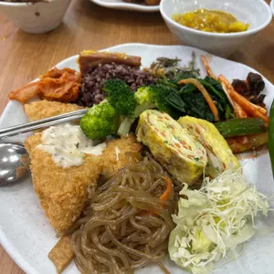
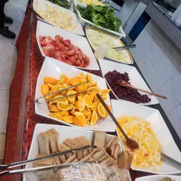

🍱 [2TV 생생정보] 월드밥 - 단돈 8,000원! 광주 서구 화정동 한식 뷔페 가성비 끝판왕
📺 2026년 2월 26일 방송 | KBS2 2TV 생생정보 | 코너: 한국인의 식판

요즘 외식 물가가 만만치 않죠? 그런데 8,000원에 푸짐한 한식 뷔페를 즐길 수 있는 곳이 있다면 믿으시겠어요?
오늘은 2TV 생생정보 '한국인의 식판' 코너에서 소개된 광주 서구 화정동의 가성비 한식 뷔페 월드밥을 소개합니다!
1인 8,000원
💡
택시 기사님들의 단골 맛집! 30~40가지 메뉴를 무한리필로 즐길 수 있는 광주 현지인 맛집입니다.
📍 맛집 기본 정보
🏪 가게명: 월드밥
🏠 위치: 광주 서구 화정동 금호월드 지하 1층
💰 가격: 1인 8,000원 (무한리필 한식 뷔페)
🍽️ 메뉴 수: 30~40가지 메뉴 무한리필
📺 방송: 2TV 생생정보 2026.02.26 '한국인의 식판' 코너
👥 추천 대상: 가족 모임, 직장인 점심, 혼밥도 OK
🍽️ 뷔페 구성

💬 실제 방문 후기
"8,000원에 이 정도 가성비! 광주의 모든 뷔페를 가본 건 아니지만 제가 알고 있는 뷔페에 한해서는 여기가 최고입니다."
✨ 이 맛집의 포인트
- ✅ 가격 대비 최고의 가성비 — 8,000원에 30~40가지 한식 무한리필
- ✅ 현지인 단골 맛집 — 택시 기사님들이 줄 서는 곳
- ✅ 금호월드 지하 1층 접근 편리 — 화정동 대형 쇼핑센터 내 위치
- ✅ 저렴하지만 맛은 확실 — 방송에서도 극찬
🔥 월드밥 - 광주 여행 필수 코스! 8,000원으로 30~40가지 한식 배 터지게 먹자!
🏷️ 관련 태그
#생생정보
#한국인의식판
#월드밥
#광주맛집
#한식뷔페
#무한리필
#가성비맛집
#광주서구맛집
#8000원뷔페
#화정동맛집
#금호월드
※ 본 포스팅은 KBS 2TV 생생정보 방송 내용을 기반으로 작성되었습니다. 방문 전 영업시간과 메뉴를 확인해주세요.